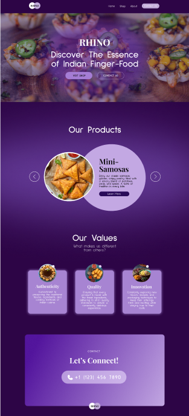
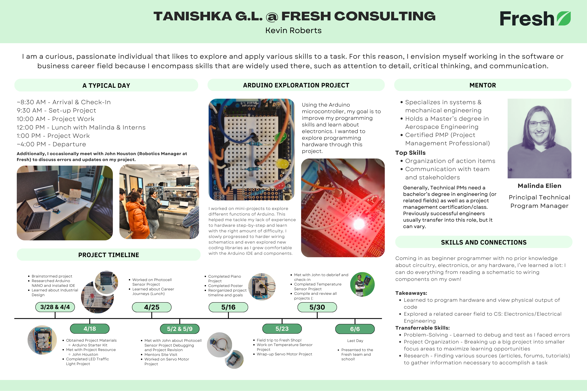

Here are some cool projects I’ve worked on!
UX/UI Freedom Project (Spring 2024)
The Bellevue Big Picture curriculum includes a unique project known as the Freedom Project that allows students to spend a month learning and developing skills of a personal area of interest. In this project, I created a 6-page website mockup for a fictional company that makes and distributes Indian finger food.
Arduino Exploration (Spring 2024)

As part of my internship with the Engineering team @ Fresh Consulting, I worked on several mini-projects exploring the Arduino microcontroller Arduino learning about various sensors and components and their application in the real world.
DecodaBuild Campaign (Fall 2023)
As part of my internship with the Marketing team @ Fresh Consulting, I created media assets (blog posts, social media posts, and customer input surveys) as well as market analysis for an educational platform that the company is developing. Here's a link to my final work on canva.

Google Web Development Projects (2023)